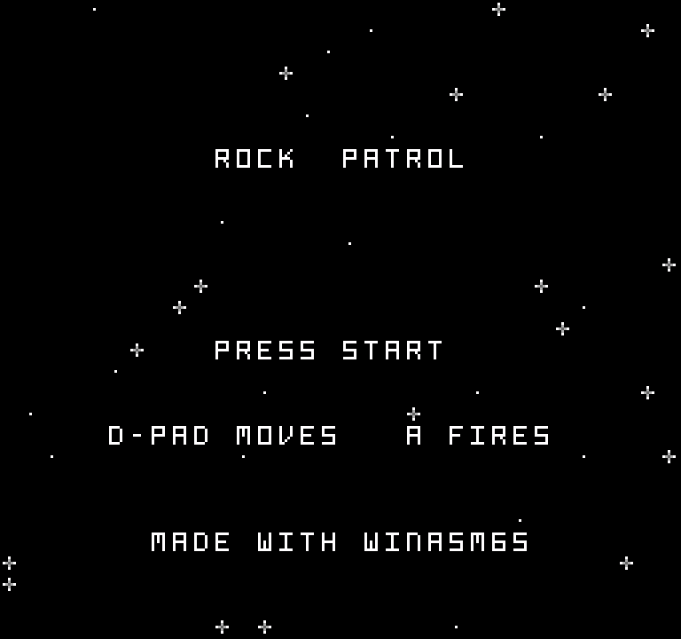
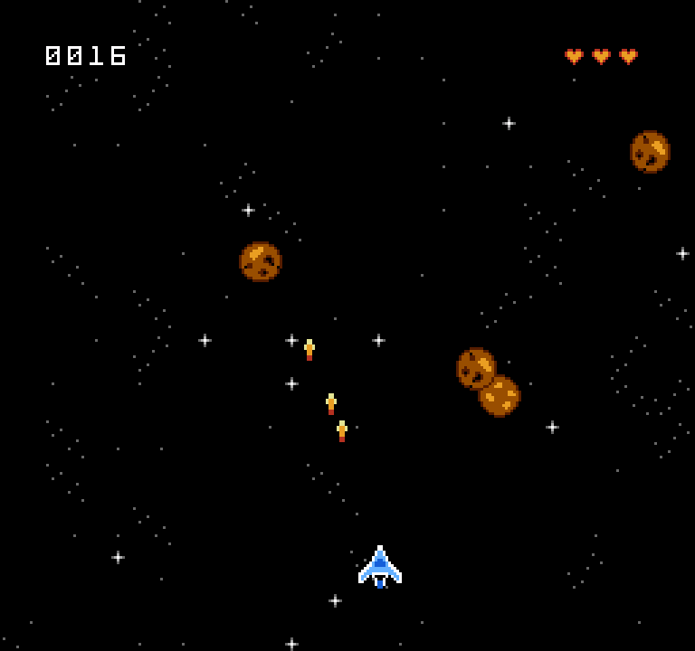
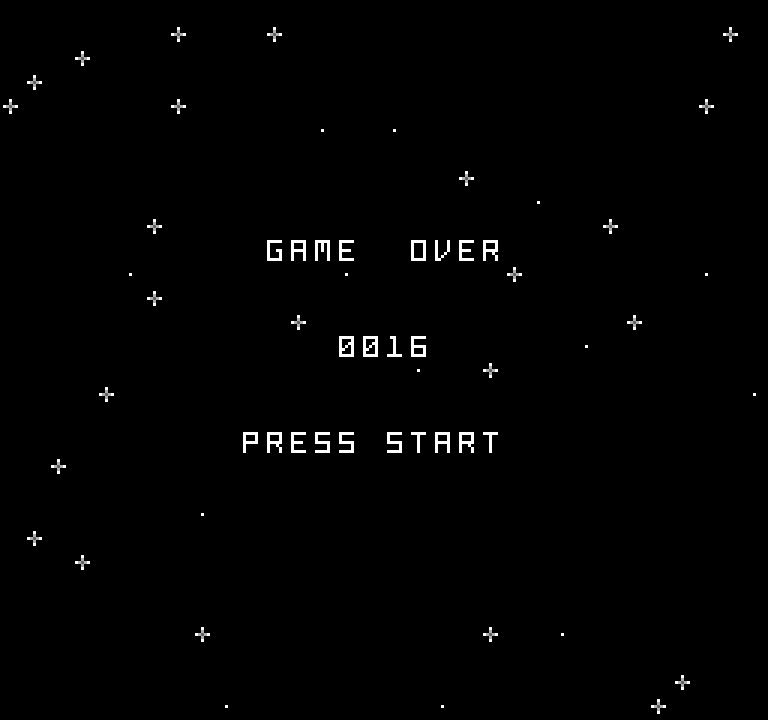
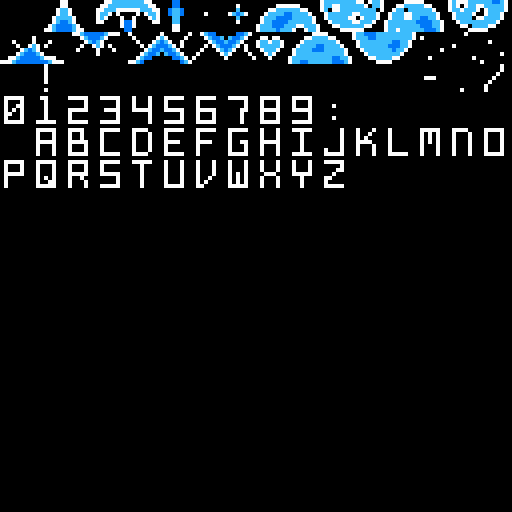

Example game: Rock Patrol
A small NES game written for this documentation, code and graphics alike: rocks fall through a scrolling starry sky and a ship shoots them, in about 1,000 lines of 6502 assembly, graphics made with the Graphics Designer, and a config.json that puts them together into a 40,976-byte ROM. The examples on these pages come from it. This page shows how to build and play it, how the project is laid out, how the graphics are made, and walks through the code.
The game
Rocks fall through a starry sky that scrolls down past the ship. Fly with the d-pad, fire with A. A rock shot is a point, and every ten points the rocks fall faster and come more often. A rock that hits the ship costs one of its three lives; the ship then blinks for two seconds, and nothing hurts it. After the last life, GAME OVER shows the score, and START goes back to the title. The code and the graphics are original and may be reused freely.






tools/screenshots/shoot-game.ps1: an autopilot written in Lua plays the game in Mesen2, firing all the time and steering under the lowest rock (see Testing).Build and play
From the example_rock_patrol folder, either of these builds the ROM, rock_patrol.nes:
compile.bat # exports the graphics, deletes the previous outputs, then WinASM65 -l -c config.json
WinASM65 -l -c config.json # the same build by hand; -l also writes src\*.lstRun the command line from the project folder: on the command line the paths of config.json are relative to the current directory (see the config.json reference). Open the ROM in Mesen2, or any NES emulator: mapper 0 (NROM), 32 KB of program, 8 KB of tiles. compile.bat first runs WinASM65.Designer export gfx when the designer is on the PATH; without it, the exported graphics committed in gfx/ are used.
In VS Code with the WinASM65 extension, open the folder and press F5: the extension finds config.json, builds the project and starts Mesen2 with the debugger attached. The committed config.json names the emulator in its Emulator section, mesen2 at an example path, C:\Emulators\Mesen2\Mesen.exe: point it at your Mesen2, or set the winasm65.emulatorPath setting (or emulatorPath in launch.json), which takes precedence. A breakpoint on line 139 of src/game.asm, the first instruction of NMI, stops at the start of every frame, as on the VS Code page.
| Button | Does |
|---|---|
| START | On the title screen, starts a game. On the game over screen, goes back to the title. |
| D-pad | Moves the ship two pixels a frame, between x = 8 and x = 232 and between y = 120 and y = 200: the lower half of the screen. |
| A | Fires at once; held, fires again every 10 frames. At most three shots are in the air. |
The rules, as the code has them. At most six rocks fall at once. One appears at the top every SpawnGap frames (48 at the start, down to 20), in the next of the 32 places of RockLanes, and falls FallSpeed pixels a frame (1 at the start, up to 3); both tables are read with the score's tens, from 0 to 7. A shot whose middle is inside a rock's 16×16 square breaks it: a burst and a point. A rock within 12 pixels of the ship, across and down, breaks too and costs a life, unless the ship is still blinking from the last one (120 frames). A second and a half after the last life, GAME OVER. The score has four decimal digits.
The project
| File | What it is |
|---|---|
config.json | The project: four units, combined with the tiles into the ROM. |
compile.bat | Exports the graphics when WinASM65.Designer is on the PATH, deletes src\*.o, src\*.symb, src\*.lst, the src\*.Unsolved files and the ROM, then builds with listings. |
src/header.asm | The 16-byte iNES header: mapper 0, horizontal mirroring for the vertical scrolling. |
src/data.asm | The first 16 KB of program, $8000–$BFFF, a unit of its own: the palettes, the two screens and the sky's map as the designer exports them, and three small tables. |
src/game.asm | The game, $C000 up: the metasprites, start-up, main loop, NMI, the title, play and game over, the sky, the sprites, sound. |
src/nes.inc | NES registers, buttons and two macros, included by game.asm. Not a unit of its own. |
src/vectors.asm | The NMI, RESET and IRQ vectors. |
chr/tiles.chr | The 256 tiles, 4 KB: the font, the ship, the shot, the rock, the bursts, the heart, the stars and the moon, drawn by tools/example_art.py and edited in the designer's Tile Set editor. It is both pattern tables. |
gfx/game.pal.json | The 8 palettes. |
gfx/objects.msprite.json | The 7 metasprites (ship, shot, rock and the rock turned, burst and the wide burst, heart) and two animations. |
gfx/title.screen.json, gfx/over.screen.json | The title and game over screens. |
gfx/play.map.json | The sky, a map of 2×2 metatiles two screens high, that scrolls in a loop. |
gfx/*.asm, *.bin, *.nam | What the assets export, included by data.asm and game.asm; committed, so the game builds without the designer. |
config.json
{
"Input": [
{
"FileName": "src/header.asm",
"Dependencies": []
},
{
"FileName": "src/data.asm",
"Dependencies": []
},
{
"FileName": "src/game.asm",
"Dependencies": ["src/data.asm"]
},
{
"FileName": "src/vectors.asm",
"Dependencies": ["src/game.asm"]
}
],
"Output": {
"ObjectFile": "rock_patrol.nes",
"Files": [
{
"FileName": "src/header.o",
"Size": "$10"
},
{
"FileName": "src/data.o",
"Size": "$4000"
},
{
"FileName": "src/game.o",
"Size": "$3FFA"
},
{
"FileName": "src/vectors.o"
},
{
"FileName": "chr/tiles.chr"
},
{
"FileName": "chr/tiles.chr"
}
]
},
"Emulator": {
"Name": "mesen2",
"Path": "C:\\Emulators\\Mesen2\\Mesen.exe"
}
}Inputlists the four units. Each is assembled on its own into an object file beside its source:src/header.o,src/data.o,src/game.o,src/vectors.o.data.asmandgame.asmalso writesrc/data.symbandsrc/game.symb, the JSON tables of their global names.Outputputs six files end to end.header.ois already 16 bytes, so its"Size": "$10"only guards against a header that grows.data.oholds 2,643 bytes, assembled from.org $8000;"Size": "$4000"(always hexadecimal) pads it with zeros to the first 16 KB of program,$8000–$BFFF.game.oholds 1,713 bytes, assembled from.org $C000;"Size": "$3FFA"pads it to 16,378 bytes, so that the six bytes ofvectors.ofall on$FFFA–$FFFF, the last six bytes of the program. Thentiles.chrtwice, taken as it is: the 8 KB CHR bank, pattern tables 0 and 1. A file may appear several times.Emulatoris used only to debug: the emulator the VS Code debugger and the monitor start, here Mesen2 at an example path to replace with your own. See Emulator bridges.- There is no
Targetsection: the target israwand the image is written exactly as concatenated, header included. The complete config.json example builds the same ROM with aTargetsection that writes the header instead.
Why vectors.asm depends on game.asm
.org $FFFA
.word NMI ; once per frame, at the start of the vertical blank
.word RESET ; at power-on and reset
.word IRQ ; not usedNMI, RESET and IRQ are labels of game.asm. Units are assembled separately, so while vectors.asm is assembled it does not know them: it emits three placeholder words. Its "Dependencies": ["src/game.asm"] lets it read src/game.symb in the second phase of the build, where it finds "NMI":49375, "RESET":49273 and "IRQ":49411 and patches the words to DF C0 79 C0 03 C1. Without the dependency the build stops with Line 0 - File src/vectors.asm - Type Undefined symbol. The order of Input does not matter: every unit is assembled before any is resolved. See How units are resolved.
game.asm depends on data.asm the same way: the palettes, the screens, the map's tables and RockLanes, FallSpeed and SpawnGap are labels of the other unit, read from src/data.symb. A name of another unit can be in an expression: lda #<scr_title, the low byte of a screen's address. A name that is not yet known is taken as a 16-bit address, which these are, from $8000 up, so adc FallSpeed,y takes the three-byte absolute,Y form.
header.asm needs nothing from the others: it is the header, byte by byte.
.org $0000
.byte "NES", $1A
.byte 2 ; 2 x 16 KB of program ROM
.byte 1 ; 1 x 8 KB of character ROM: chr/tiles.chr, twice
.byte %00000000 ; mapper 0 (NROM), horizontal mirroring: $2000 and $2800
; are two screens one above the other, for the scrolling sky
.byte 0
.dsb 8 ; unused, zeroThe PPU has room for two nametables, and the cartridge decides how the four addresses $2000, $2400, $2800 and $2C00 map onto them. With horizontal mirroring (bit 0 of byte 6 clear), $2000 and $2400 are the first, $2800 and $2C00 the second: two different screens stacked vertically, which is what a game that scrolls up or down needs. The high four bits of byte 6 are the low four of the mapper's number: 0, NROM, a board with 32 KB of program and 8 KB of tiles and nothing to switch.
The graphics
Every picture of the game is an asset of the Graphics Designer, edited in VS Code and exported to assembly sources that data.asm and game.asm include. The exports are committed next to the assets, so the game builds with the assembler alone; a test checks they are what an export of the assets gives today.
| Asset | Editor | Exported as | Used by |
|---|---|---|---|
chr/tiles.chr | Tile Set | itself: 4 KB, taken as it is by config.json, twice | the PPU's pattern tables 0 and 1 |
gfx/game.pal.json | Palettes | game.pal.asm (palettes:), game.pal.bin | load_palettes |
gfx/objects.msprite.json | Metasprites | objects.msprite.asm: 7 metasprites and two animations | draw_sprite, animate |
gfx/title.screen.json, gfx/over.screen.json | Screen | title.nam, over.nam (1,024 bytes each) and their .screen.asm | enter_title, enter_over, through load_screen |
gfx/play.map.json | Map | play.map.asm: 7 metatiles and a map of 16×30 of them | draw_sky |
The JSON assets name the tile set and the palettes they are drawn with ("../chr/tiles.chr", "game.pal.json"), and a prefix for their labels: spr_ for the metasprites, scr_ for the screens, bg_ for the map. data.asm includes four exports:
.include "../gfx/game.pal.asm"
.include "../gfx/title.screen.asm"
.include "../gfx/over.screen.asm"
.include "../gfx/play.map.asm"and game.asm the metasprites, at $C000, before its code. Saving an asset in VS Code exports it, and the next build uses it; compile.bat also exports them all first when WinASM65.Designer is on the PATH (WinASM65.Designer export gfx).
tools/example_art.py drew the tiles and wrote the first version of the assets: the pictures are rows of characters in the script, one a pixel. Run it again to start them over; after that, the designer is the place to edit them.
Tiles
The NES draws everything from 8×8 tiles stored in the cartridge's character ROM. Each pixel of a tile is a number from 0 to 3; the palette the tile is shown with turns that number into a colour, and 0 is transparent (or the background colour). A tile takes 16 bytes: eight bytes that hold bit 0 of each pixel, one byte per row with the leftmost pixel in bit 7, then eight bytes that hold bit 1. The Tile Set editor reads and writes chr/tiles.chr in that form. Tile n is at offset n × 16. The game draws the background and the sprites from pattern table 0 (PPUCTRL is %10000000: NMI on, both from table 0); the same file fills table 1, unused.
Letters at their ASCII codes
The font has 5×7 glyphs for the digits, the capital letters and !, -, ., / and :, each stored at the tile number equal to its ASCII code, with one empty column on the left and one empty row below. "0" is tile $30, "A" tile $41, and the space, $20, is a tile left empty. So a text typed in the Screen editor is already a row of tiles, and the score is drawn by adding '0' to each digit. The other tiles: $01–$04 the ship, $05 the shot, $06–$07 two stars, $08–$0B the rock and $0C–$0F the rock turned a quarter round, $10–$17 the two bursts, $18 the heart, $19–$1C the moon and $1D–$1F dust.


WinASM65.Designer render in the colours of the ship's sprite palette (--item ../gfx/game.pal.json#4), so the other pictures show in colours that are not theirs.Palettes
The game loads 32 bytes into the PPU at $3F00: four palettes for the background, four for the sprites. Each entry is a colour number of the NES's fixed palette, and $0F (black) is the shared colour 0. They are edited in gfx/game.pal.json, where each palette has a name, and exported as:
palettes:
.byte $0F, $30, $10, $00 ; background 0: text
.byte $0F, $00, $10, $30 ; background 1: sky
.byte $0F, $07, $17, $27 ; background 2: moon
.byte $0F, $30, $10, $00 ; background 3: unused
.byte $0F, $30, $21, $11 ; sprite 0: ship
.byte $0F, $16, $27, $38 ; sprite 1: shot
.byte $0F, $07, $17, $27 ; sprite 2: rock
.byte $0F, $16, $27, $37 ; sprite 3: burst
PAL_TEXT = 0
PAL_SKY = 1
PAL_MOON = 2
PAL_UNUSED = 3
PAL_SHIP = 4
PAL_SHOT = 5
PAL_ROCK = 6
PAL_BURST = 7Metasprites and animations
A metasprite is a picture made of several sprites placed around an origin. The export writes each one as rows of four bytes, y, tile, attributes, x, ended by $80, a table of their addresses split into low and high bytes, and a constant for each number; an animation is pairs of a metasprite's number and a duration in frames, ended by $FF and 1 if it loops:
spr_ship:
.byte $00, $01, $00, $00
.byte $00, $02, $00, $08
.byte $08, $03, $00, $00
.byte $08, $04, $00, $08
.byte $80
spr_metasprites_lo:
.lobytes spr_ship, spr_shot, spr_rock, …
SPR_MS_SHIP = 0
SPR_MS_SHOT = 1
SPR_MS_ROCK = 2
…
spr_rock_anim:
.byte 2, 12
.byte 3, 12
.byte $FF, 1draw_sprite copies a metasprite into the sprite table, adding the position to each row, and animate finds the frame of an animation at a given clock (below).
Screens and the sky
A screen is 960 tile numbers and 64 attribute bytes, exported as a 1,024-byte .nam that load_screen copies to $2000 as it is. The sky is a map: 16×30 metatiles of 2×2 tiles and a palette each, exported as four tables of tiles (bg_metatile_tl, _tr, _bl, _br), a table of palettes and the map, a row of 16 metatile numbers per row. draw_sky writes its top 15 rows into $2000 and the bottom 15 into $2800, then the attribute bytes, four metatiles' palettes to a byte.
A tour of game.asm
The variables come first. .memarea sets where .res starts handing out addresses; nothing is emitted:
; Variables, in zero page: .res hands out addresses from $0000 on.
.memarea $0000
frame_done .res 1 ; set by NMI, cleared by wait_frame
frames .res 1 ; counts frames
pad .res 1 ; the buttons held this frame
pad_new .res 1 ; and those pressed this frame
state .res 1
ptr .res 2
tmp .res 1
tmp2 .res 1
slot .res 1 ; the object draw_play is at
tile_pal .res 1 ; the sprite palette put_tile uses
ms_x .res 1 ; where draw_sprite puts a metasprite
ms_y .res 1
oam_at .res 1 ; the next free entry of OAM
ctrl .res 1 ; what NMI writes to PPUCTRL
scroll_y .res 1 ; the sky's first line on screen, 0-239 ...
sky_pos .res 2 ; ... from the sky's position, 0 to SKY_HEIGHT-1
…Zero page, $00–$FF, is the fast page: an instruction on an address there takes a byte less and often a cycle less, and the assembler picks that form by itself when the address is known to be below $100. The objects' tables are at $0300 and up, after the stack ($0100) and the sprite table ($0200).
Start-up
RESET:
sei
cld
ldx #$40
stx APU_FRAME ; no APU frame interrupt
ldx #$FF
txs
inx ; X = 0
stx PPUCTRL ; no NMI yet
stx PPUMASK ; picture off
stx DMC_FREQ
vblank_wait ; the PPU needs two frames to wake up
txa
@clear: sta $0000,x
sta $0300,x
sta $0400,x
sta $0500,x
sta $0600,x
sta $0700,x
inx
bne @clear
jsr clear_sprites
vblank_wait
jsr load_palettes
lda #%00001001 ; pulse 1 and noise on
sta APU_STATUS
jsr enter_titleThe PPU needs two frames to wake up, hence two vblank_wait, a macro of nes.inc:
; Loops until the PPU starts a vertical blank.
.macro vblank_wait
- bit PPUSTATUS
bpl -
.endmacroThe anonymous label - is the target of the nearest bpl - above it: a macro can be used many times without its labels clashing.
Main loop and states
Main:
jsr wait_frame
jsr read_pad
jsr clear_sprites
lda state
cmp #STATE_PLAY
beq @play
cmp #STATE_OVER
beq @over
jsr update_title
jmp Main
@play: jsr update_play
jmp Main
@over: jsr update_over
jmp MainThe game is one of three states: the title, play and game over. Each has an enter_ routine that draws its screen with the picture off, and an update_ routine called once a frame.
NMI, the sprite DMA and the scroll
The PPU raises an NMI at the start of every vertical blank, 60 times a second: the only time video memory can be written while the picture is on. NMI, at $C0DF, copies the 256-byte sprite table at OAM = $0200 to the PPU with one write to OAMDMA, and sets the scroll for the coming picture:
; Once a frame, at the start of the vertical blank: the sprites and the scroll.
NMI:
pha
lda #0
sta OAMADDR
lda #>OAM
sta OAMDMA ; the 256 bytes of OAM to the PPU
lda ctrl ; the nametable the sky starts in
sta PPUCTRL
bit PPUSTATUS
lda #0
sta PPUSCROLL
lda scroll_y
sta PPUSCROLL
inc frames
lda #1
sta frame_done
pla
IRQ: rti
; Waits for the next NMI.
wait_frame:
lda #0
sta frame_done
- lda frame_done
beq -
rtsThe main loop builds the next frame's sprites while this one is drawn; the NMI copies them when it is done.
The scrolling sky
; The sky moves one line down a frame: its position goes back by one,
; from 0 round to SKY_HEIGHT-1; the second screen is $2800.
scroll_sky:
lda sky_pos
bne +
lda sky_pos+1
bne ++
lda #<SKY_HEIGHT ; at 0: on to the bottom of the second screen
sta sky_pos
lda #>SKY_HEIGHT
sta sky_pos+1
jmp scroll_sky
++ dec sky_pos+1
+ dec sky_pos
lda sky_pos+1 ; under 240, the first screen
bne @low
lda sky_pos
cmp #240
bcs @low
sta scroll_y
lda #CTRL_NMI
sta ctrl
rts
@low: lda sky_pos
sec
sbc #240
sta scroll_y
lda #CTRL_NMI|2 ; nametable 2: $2800
sta ctrl
rtsThe sky is two screens, 480 lines, one above the other. Its position goes back by one line a frame, so the picture moves down; above 240 the picture starts in the second nametable, picked by the low bits of PPUCTRL.
Reading the joypad
; The joypad into pad (A in bit 7 ... right in bit 0), and what went down into pad_new.
read_pad:
lda pad
sta tmp
lda #1
sta JOY1
lda #0
sta JOY1
ldx #8
- lda JOY1
lsr a ; the button into carry
rol pad
dex
bne -
lda tmp
eor #$FF
and pad
sta pad_new
rtsWriting 1 then 0 to JOY1 latches the eight buttons; eight reads then give them one by one in bit 0, A first. pad_new is what was not held the frame before: a press, not a hold.
Sprites
; Metasprite A at (ms_x, ms_y): its tiles into OAM. Each tile of an exported
; metasprite is four bytes, y, tile, attributes, x; a y of $80 ends it.
draw_sprite:
tax
lda spr_metasprites_lo,x
sta ptr
lda spr_metasprites_hi,x
sta ptr+1
ldy #0
ldx oam_at
@tile: lda (ptr),y
cmp #$80
beq @done
clc
adc ms_y
sta OAM,x
iny
lda (ptr),y
sta OAM+1,x
iny
lda (ptr),y
sta OAM+2,x
iny
lda (ptr),y
clc
adc ms_x
sta OAM+3,x
iny
inx
inx
inx
inx
bne @tile
@done: stx oam_at
rts
; Where an animation is after A frames: in A, its metasprite. An exported
; animation is pairs of (metasprite, frames), then $FF and 1 if it loops.
; Carry set: it did not loop and is over.
animate:
sta tmp
@again: ldy #0
@frame: lda (ptr),y
cmp #$FF
beq @end
sta tmp2
iny
lda tmp
sec
sbc (ptr),y
bcc @this ; within this frame's duration
sta tmp
iny
bne @frame
@this: lda tmp2
clc
rts
@end: iny
lda (ptr),y
bne @again ; it loops: on from its first frame
sec
rtsdraw_sprite finds the metasprite through the two exported tables of addresses and copies its rows into OAM. animate walks an exported animation, taking each frame's duration off the clock until the clock falls inside one; a looping animation starts over, the others end with the carry set, which draw_play takes as the end of a burst.
Firing
; A fires a shot from the ship's nose; held, another every FIRE_DELAY frames.
fire:
lda fire_wait
beq +
dec fire_wait
+ lda pad
and #PAD_A
beq @done
lda pad_new
and #PAD_A
bne @free ; just pressed: at once
lda fire_wait
bne @done
@free: ldx #MAX_SHOTS-1
- lda shot_y,x
beq @shoot
dex
bpl -
@done: rts
@shoot: lda ship_x
clc
adc #4
sta shot_x,x
lda ship_y
sec
sbc #6
sta shot_y,x
lda #FIRE_DELAY
sta fire_wait
lda #%10000110 ; a short beep that falls: duty 1/2, decaying
sta SQ1_VOL
lda #%10111001 ; sweep down
sta SQ1_SWEEP
lda #$60
sta SQ1_LO
lda #%00001000
sta SQ1_HI
rtsA shot is two bytes, its place across and down; 0 down is a free slot. The sound is the first pulse channel with a falling sweep.
Rocks and hits
; The rocks fall FallSpeed pixels a frame, by the score's tens.
move_rocks:
ldx #MAX_ROCKS-1
@rock: lda rock_y,x
beq @next
inc rock_clock,x
ldy speed
clc
adc FallSpeed,y
cmp #ROCK_BOTTOM
bcc +
lda #0 ; out at the bottom
+ sta rock_y,x
@next: dex
bpl @rock
rts
; A shot within a rock's 16 x 16 square breaks it: a burst, and a point.
hit_rocks:
ldx #MAX_ROCKS-1
@rock: lda rock_y,x
beq @next
ldy #MAX_SHOTS-1
@shot: lda shot_y,y
beq @miss
lda shot_x,y ; the shot's middle, x + 4, within the rock's 16 pixels
clc
adc #4
sec
sbc rock_x,x
cmp #16
bcs @miss
lda shot_y,y
clc
adc #4
sec
sbc rock_y,x
cmp #16
bcs @miss
lda #0 ; hit: both go
sta shot_y,y
jsr break_rock
jsr add_point
jmp @next
@miss: dey
bpl @shot
@next: dex
bpl @rock
rtsBoth tests are one subtraction and one unsigned comparison: the shot's middle minus the rock's corner is below 16 only when it is inside the rock, since a negative difference is a large unsigned number.
WinASM65 features used
Rock Patrol uses most of what a small NES project needs from the assembler. Where each feature appears, and where it is described:
| Feature | Where in Rock Patrol | Reference |
|---|---|---|
.include | .include "nes.inc" in game.asm; the designer's exports in data.asm and game.asm. | Directives |
| Macros with and without a parameter | vblank_wait (start-up, picture_on); set_ppu address (load_palettes, load_screen, draw_sky). | Macros |
.memarea and .res | The zero-page variables from $00, and the objects' tables from $0300, of MAX_ROCKS, MAX_SHOTS and MAX_BURSTS bytes. | Directives |
.org | $0000 in header.asm, $8000 in data.asm, $C000 in game.asm, $FFFA in vectors.asm. | Directives › Placement |
Local labels @name | @clear, @play, @over, @row, @attr, @tile, @frame, @shoot, @rock in several routines. | Labels |
Anonymous labels -, + and ++ | vblank_wait, wait_frame, read_pad, move_ship, scroll_sky (with ++). | Labels |
.lobytes / .hibytes | spr_metasprites_lo and spr_metasprites_hi, exported by the designer. | Directives › Data |
Strings in .byte | "NES" in the header. | Directives › Data |
.incbin | The screens, scr_title: .incbin "title.nam" in the exported title.screen.asm. | Directives › Data |
.word | The three vectors. | Directives › Data |
.dsb | .dsb 8: the eight zero bytes that end the header. | Directives › Data |
Expressions with <, >, |, *, +, - and parentheses | #<scr_title, #>OAM, #CTRL_NMI|2, #<(SKY_ROWS*16), OAM+1,x. | Expressions |
| Character constants, binary numbers | adc #'0' in draw_score; %00001001, the PAD_ masks. | Numbers and characters |
Constants (=) | The registers of nes.inc, the game's tuning (SHOT_SPEED, FIRE_DELAY, HURT_FRAMES…), the states, and the exported SPR_MS_ and PAL_ numbers. | Constants |
| Names that differ only in case are the same name | Why each variable is named apart from every constant: the variable fire_wait sits beside the constant FIRE_DELAY, never beside a FIRE_WAIT, which would be the same name. | Constants, Assembly pipeline |
| Forward references | jsr enter_title, jsr update_play and the other routines called before they are defined. | Constants, Assembly pipeline |
| Zero page addressing chosen automatically | lda ship_x and inc score,x take the two-byte zero page forms; lda rock_y,x, at $0300 and up, keeps the absolute form (BD 06 03). | Addressing modes |
Units, Dependencies and .symb | vectors.asm takes NMI, RESET and IRQ from game.symb; game.asm takes the screens, the map and the tables from data.symb, in expressions too (#>scr_title). | Input[], How units are resolved |
Size padding in Output | "$10" for the header, "$4000" and "$3FFA" for the two halves of the program; tiles.chr taken as it is, twice. | Combining files |
Where to go next
Graphics Designer
The editors of every asset of the game, pictures in hovers, and the live preview.
VS Code
Hover cards, the listing column and a debug session, all on Rock Patrol.
Projects and segments
Every key of config.json, with a complete example built from this game.
Monitor
The terminal monitor on rock_patrol.nes, live RAM and ROM.